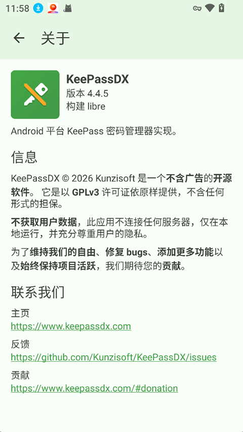
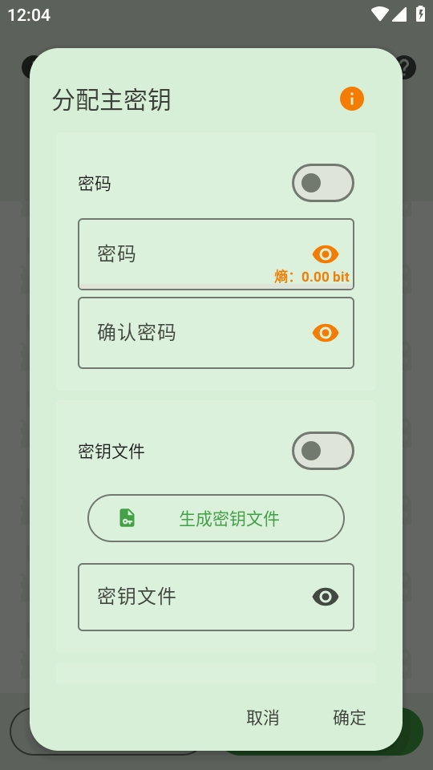

Steam 账户被盗那晚，我用 KeepassDX 重建了整套凭证
一个深夜的账户被盗经历，让我下定决心放弃"所有网站用同一个密码"的坏习惯。这篇文章记录我如何用 KeepassDX 从零搭建自己的密码库，从分组规划到 TOTP 配置，一步步把散落在手机备忘录和浏览器里的凭证全部收编。
凌晨三点的那条短信
凌晨三点零七分，手机震了一下。我迷迷糊糊摸过来——是 Steam 的验证码短信。
"您的 Steam 验证码为：7F3D2。此验证码 5 分钟内有效，请勿向任何人透露。"
我一下就醒了。我没有在这个时间登录任何东西。更要命的是，我没有开启 Steam Guard 手机验证——我嫌麻烦，用的是邮箱验证，而那个邮箱的密码和我的 Steam 密码是同一个。
跳起来打开电脑，改密码的时候手还在抖。好在邮箱有二次验证，抢回来了；但那十分钟里我脑子里只有一个念头：我到底在多少个网站上用了这套凭证？
十年积弊，一张纸列不完
天亮之后我做的第一件事，是列出所有我在用的网站和服务。浏览器保存了一长串，但还有一堆是存在手机备忘录里、或者干脆只靠脑子记的。银行、邮箱、云盘、论坛、订阅服务——最后数下来四十七处。
四十七处里，有三十一处用了同一个密码。剩下的十六处，分别是那个密码后面加个年份、加个感叹号、或者把数字稍微改一下。安全？这叫一捅就破的纸糊墙。
我试过用系统自带的密码管理器。Chrome 的能自动填但跨平台就废了，iOS 的钥匙串对 PC 端无能为力。然后朋友给我甩了一个链接——KeepassDX，一个开源的 Android 密码管理器，它的官网上有详细的功能说明。
从零开始搭库的那个下午
从官方下载拿到安装包之后，第一次打开 KeepassDX，它让我创建一个新的 KeePass 数据库文件，再设一个主密码。这个主密码是唯一需要我记在脑子里的东西——我花了十分钟想了一句足够长、足够独特的口令，没有存任何地方。
新建数据库的时候，KeepassDX 预创建了几个默认分组：General、Internet、eMail。但这些对我来说太模糊了。我需要一套能让我一眼定位到"这东西在哪个分组"的结构。
最后我是这么分的：
- 银行与支付——所有有资金风险的东西独立一组
- 邮箱与云盘——邮箱、OneDrive、Dropbox
- 社交与论坛——微博、知乎、Steam、B站
- 工作相关——公司邮箱、内部系统、API Key
- 家庭共用——Wi-Fi 密码、路由器后台
- 归档——已经不用但舍不得删的旧账户
分组不超过两层嵌套，每个分组名字一看就知道装的是什么。原来那四十七处凭证，我花了整个下午逐条录入、改密码、归位。改密码这一步是最累的——每个网站都得切过去走一遍找回/修改流程，但也是最有成就感的。

那些浏览器存不了的东西
录入到一半的时候我发现，有些信息根本不是"用户名+密码"能装下的。
比如某家银行在登录之后还要输入一个单独的 PIN 码——和密码分开的、只有四位数的数字码。比如几个网站的安全问题答案，我当年随便填的，现在得找回来。比如我的 Steam 恢复码，一张纸拍的照片，之前存在相册里。
KeepassDX 的自定义字段就是干这个的。每个条目除了固定的标题、用户名、密码、URL、备注，还能加任意多的 Key-Value 对。PIN 码我标成了"保护字段"——默认隐藏，点一下才显示，而且从剪贴板复制的时候需要我再输一次主密码确认。Steam 的恢复码我直接作为附件挂在了条目上。
这样一来，原来散在备忘录、相册、甚至一张便签纸上的零碎信息，全归到了对应的条目下面。找的时候不用翻手机相册，进 KeepassDX 搜关键字就行。
Steam 验证码那点事——以及 Pro 版值不值
说到 Steam，就绕不开它那套特立独行的双因子认证。
标准的 TOTP 是 SHA-1 加 30 秒周期出 6 位纯数字码，但 Steam 不用这套。它用自定义的哈希算法，出的是 5 位字母数字混合码——还特意排除了 O、I 这种容易和 0、1 混淆的字符。官方只在自己的手机 App 里内置了这个算法，开源 2FA 应用全都不支持，因为 Steam 没公开算法细节。
KeepassDX Pro 版实现了这套逆向出来的 Steam 算法——后来去KeepassDX文档翻了一下才知道，这是少数几个非标准 TOTP 被支持的案例。配置的时候把类型切到 "Steam"，从 Steam Guard 导出共享密钥填进去就行，码直接在条目界面显示。甚至可以直接导入 Steam 的 maFile.sda JSON 文件，自动填好所有参数。
Pro 版要花多少钱？一次性买断四美元左右，不是订阅。功能上除了 Steam TOTP，还有更灵活的 OTP 参数配置和数据库加密选项。但说实话，如果没有 Steam 账户，这笔钱确实花不出去——Free 版和 F-Droid 上的 Libre 版已经覆盖了 99% 的普通用户需求，密码管理、自动填充、普通 TOTP、Passkey、附件这些核心功能全有。
我最终还是买了。倒不是为了 Steam 验证码——Steam 的手机 App 其实一直能用来生成，双轨并行也没什么。主要是 KeepassDX 开发者单枪匹马维护这么多年，这点钱算是份心意。

那晚之后
从凌晨三点收到那条短信，到所有凭证重新归位、所有密码改成唯一值、Steam 也开了双重验证，前后花了大概三天。
现在的状态是：主密码只记在脑子里，数据库文件存一份在手机一份在云盘做备份，每次新增账户都直接进 KeepassDX 生成随机密码——十六位起，字母数字符号混合。手机上的 Magikeyboard 自动填充，打开任何网站都不用手动敲密码。
回头看那次被盗，本质上不是 Steam 的漏洞，是我自己用了十年的密码复用习惯在那天被人撞上了。KeepassDX 没有帮我阻止那次入侵，但它给了我一个干净的起点——不用再记四十七套密码，只用记一个；不用再担心某个网站被拖库会不会牵连其他账户，因为每个密码都不同。
收尾
写这篇文章的时候我顺手整理了一遍资料链接，分别同步到了三个代码托管平台：GitHub、Gitee 和 GitCode，国内用户选哪个顺手用哪个就行。